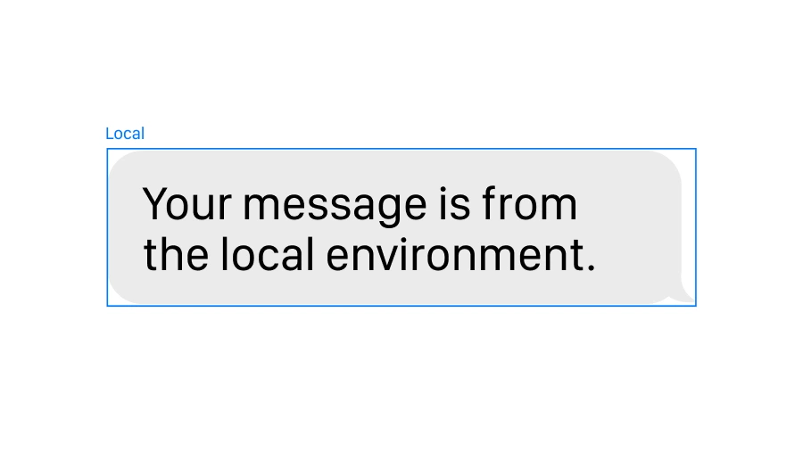
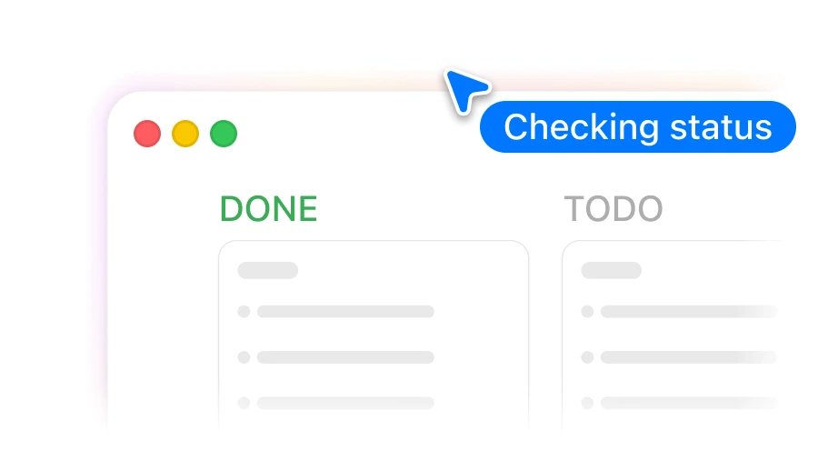
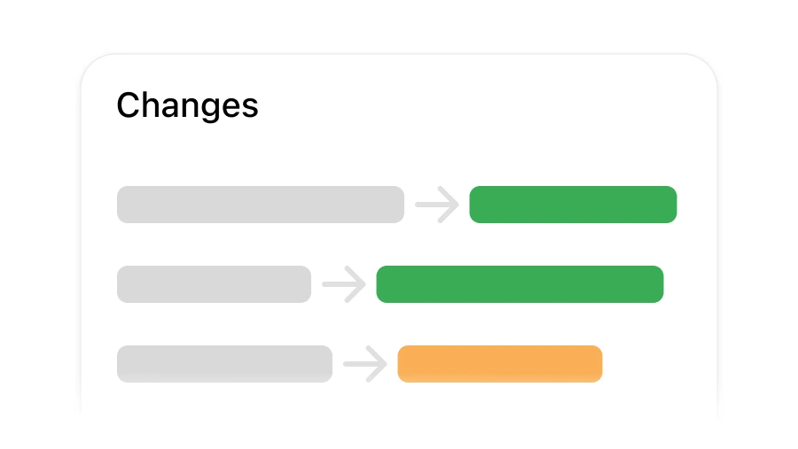

Local sessions
One conversation, one local agent loop.
Native chat, your providers, and sandboxed review in one open-source desktop loop.
Why OpenBridge

One conversation, one local agent loop.

Operate Mac apps only when you allow it.

Accept only the changes you want.
Providers
OAuth, API keys, OpenAI-compatible routes, and gateways.
 OpenAI
OpenAI
 Anthropic
Anthropic
 Google Gemini
Google Gemini
 Bedrock
Bedrock
 Azure
Azure
 Cloudflare
Cloudflare
 Cerebras
Cerebras
Workflows
Track runs, approve control, and review files without losing context.
Active, waiting, and finished runs stay visible.
Only after you allow it.
Accept selected files or discard the run.
Build
git submodule update --init --recursive
cd web && yarn install --immutable && yarn build:embedded
cd ../sandbox-vm && make framework
cd ../macos
BUILD_CONFIGURATION=UnsignedDebug bash DevKit/Scripts/workspace_build_debug.shOpen source. Local-first. Built for Mac.
Open GitHub